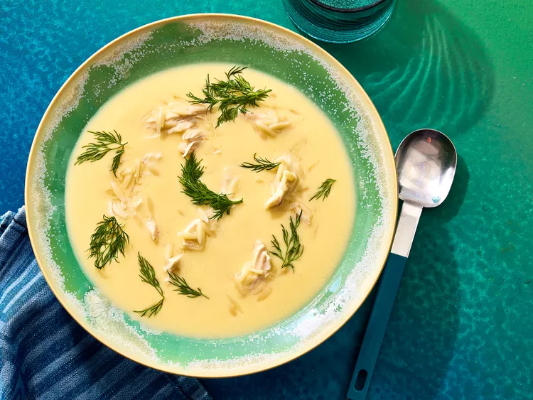

Greek Chicken Avgolemono

Description
Avgolemono soup is a classic lemony chicken soup thickened with eggs.
- 2 boneless, skinless chicken breasts
- 2 quarts of chicken stock
- 1/2 cup of rice or orzo
- 2-5 large eggs (depending on thickness. 2 eggs will be lighter, 5 eggs will be more of a saucy consistency)
- 1/4 to 1/2 cup of lemon juice
- Kosher Salt
- Dill for garnish
Directions
- In a heavy bottomed pot or dutch oven, combine chicken breast with the chicken stock. Allow to simmer gently until chicken is cooked through. Remove chicken from stock.
- When chicken is cool enough to handle, dice or shred the meat and set aside.
- Add rice or orze to stock and cook until just tender (about 20 minutes for rice and 13 minutes for orzo).
- In a heatproof bowl, combine eggs with 1/4 cup of lemon juice and beat until lightly foamy.
- While whisking constantly, ladle in about 1/2 cup of the hot chicken broth into the eggs. Ladle in three or four more 1/2 cup additions of the hot broth while whisking, then whisk the egg-broth mixture back into the saucepan (this technique keeps the eggs from curdling by heating it slowly, as opposed to just pouring it all into the hot broth directly). season with salt.
- Cook the soup over low heat, whisking and scraping the sides constantly until thickened by the eggs. Taste soup and whisk in additional lemon juice if desired. Season with salt to taste.
- Add chicken meat back into the soup. Ladle into bowls and garnish with dill if desired.